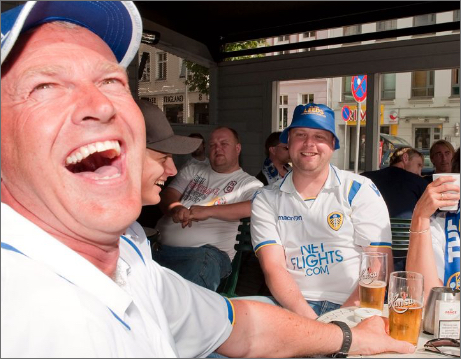

A little bit about me and my relationship
with Leeds United!
My name is Gord Rostøl

I’ve been a Leeds supporter since 1975. Even though “we’ve had our up’s and downs”, I’ve never stopped believing in Leeds and their ability to beat their own streak of pure bad luck.
Before Covid-19, I would spend around 50´000 NOK a year on Leeds, going to as many of their matches as possible.
I made this blog to give a more emotional view on how Leeds are doing out there on the field. These are all subjective opinions and thoughts gathered through all the years I have been following the greatest team in the world!